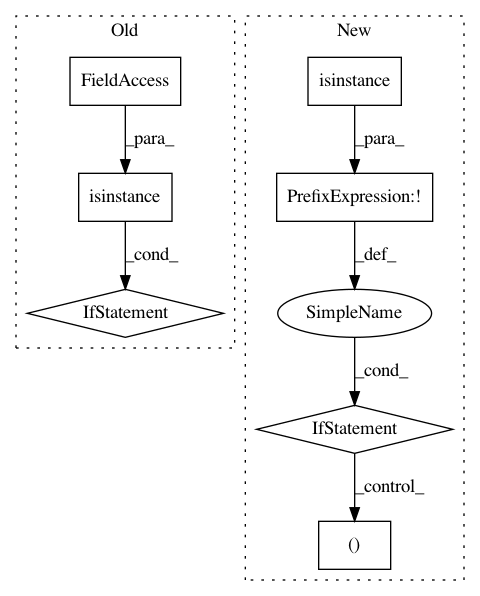

2079a72d90e527149e527b5cb376b37ddc9e25bd,torchsample/transforms/affine_transforms.py,Zoom,__init__,#Zoom#,330
Before Change
if false, perform the transform on the tensor and return the tensor
if true, only create the affine transform matrix and return that
if not isinstance(zoom_range, list) and not isinstance(zoom_range, tuple):
raise ValueError("zoom_range must be tuple or list with 2 values")
self.zoom_range = zoom_range
self.lazy = lazy
//self.coords = None
After Change
if not isinstance(value, (tuple,list)):
value = (value, value)
self.value = value
if not isinstance(interp, (tuple,list)):
interp = (interp, interp)
self.interp = interp
self.lazy = lazy
def __call__(self, x, y=None):
In pattern: SUPERPATTERN
Frequency: 3
Non-data size: 7
Instances
Project Name: ncullen93/torchsample
Commit Name: 2079a72d90e527149e527b5cb376b37ddc9e25bd
Time: 2017-05-09
Author: ncullen.th@dartmouth.edu
File Name: torchsample/transforms/affine_transforms.py
Class Name: Zoom
Method Name: __init__
Project Name: Alexander-H-Liu/End-to-end-ASR-Pytorch
Commit Name: 6acc103ea1f132846020209c3eff5646077e55cd
Time: 2019-10-14
Author: alexliu36@gmail.com
File Name: src/plugin.py
Class Name: EmbeddingRegularizer
Method Name: __init__
Project Name: neurodsp-tools/neurodsp
Commit Name: f4999d0ee32742d680cc09b4898c13a4aaa8b9bf
Time: 2021-02-02
Author: ryan.hammonds@utexas.edu
File Name: neurodsp/plts/time_series.py
Class Name:
Method Name: plot_time_series